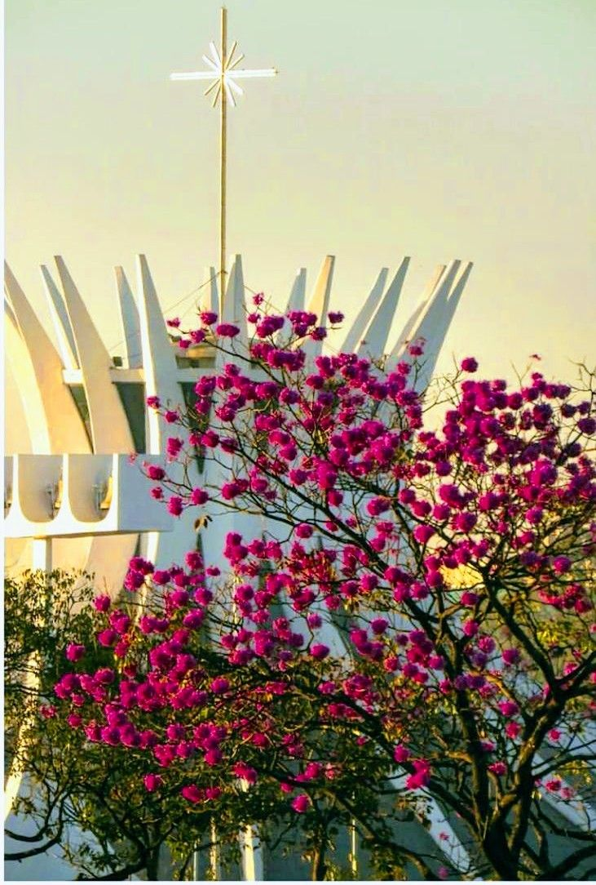

O planejamento urbano de Brasília foi concebido de forma bastante diferente de outras cidades brasileiras, já que nasceu a partir de um projeto moderno e planejado. Idealizada por Lúcio Costa e Oscar Niemeyer, a cidade foi estruturada para priorizar a organização espacial e a circulação de veículos. No entanto, essa priorização do transporte individual acabou gerando, ao longo do tempo, uma forte dependência de carros, o que trouxe desafios para a mobilidade urbana, especialmente com o crescimento das regiões administrativas ao redor do Plano Piloto.
Nesse contexto, o Metrô do Distrito Federal foi implantado como uma alternativa para melhorar o deslocamento da população, principalmente ligando áreas mais afastadas, como Ceilândia e Samambaia, ao centro da capital. Apesar de sua importância, o sistema ainda possui uma cobertura limitada e não atende plenamente todas as regiões, o que faz com que muitos moradores continuem dependentes de ônibus ou transporte individual.